영사기능사 (2011-04-24 기출문제)
1과목: 전기일반
1. 220[V]용 영사기를 380[V] 전원에서 사용하고자 한다. 반드시 필요한 것은?
- 변류기
- 발전기
- 변압기
- 전동기
(정답률: 알수없음)

2. 영화관의 스크린은 음이 통과할 수 있게 구멍이 뚫려 있다. 이 스크린에 픽셀(Pixel)의 집합체인 디지털 영상을 투영할 때 스크린 구멍과 영상의 픽셀이 어떤 주기에 걸려 얼룩이나 물결무늬 현상이 생길 수 있는데 이러한 현상은?
- 아지랑이 현상
- 스모그 현상
- 반사 현상
- 모아레 현상
(정답률: 알수없음)
3. 다지털시네마의 표준으로 사용하는 X‘Y’Z‘ 컬러(Color)에 대한 설명 중 옳지 않은 것은?
- X의 색좌표는 1.0 이고 Y의 색좌표는 0.1 이고 Z의 색좌표는 0.0 이다.
- XYZ 색좌표는 GIE1931 보다 더 넓은 영역이다.
- X'Y'Z'에서 프라임(Prime)은 시네마 감마 2.2 가 적용된 상태이다.
- DCP 의 XYZ 컬러는 디지털 프로젝터에서 XYZ PCF를 선택하여야 RGB 로 상영하는 것이다.
(정답률: 알수없음)
4. 디지털시네마의 DCP 배급 형태는 외장형 하드디스크(HDD)를 사용한다. DCP를 지원하지 않는 외장형 하드디스크의 파티션은 무엇인가?
- Ext2
- Ext3
- NTFS
- HFS
(정답률: 알수없음)
5. 서버 소스 리스트에서 각 종 파일을 다운받아 설치까지 간단히 끝내는 강력한 편의성을 제공하고 사용자가 일일이 의존성을 체크할 필요가 없고 각 패키지별 의존성을 따질 필요 없이 사용할 수 있는 리눅스 OS 중의 하나인 것은?
- 데비안(Debian)
- 우문투(Ubuntu)
- 페도리(Fedora)
- 레드 햇(Red Hat)
(정답률: 알수없음)
6. 우리나라 가정용 전기에 대한 설명으로 옳은 것은?
- 직류-220[V]-50[Hz]
- 교류-220[V]-50[Hz]
- 직류-220[V]-60[Hz]
- 교류-220[V]-60[Hz]
(정답률: 알수없음)
7. 영화 상영시 빛과 거리의 관계에 대한 설명으로 옳은 것은?
- 빛의 세기는 거리에 비례한다.
- 빛의 세기는 거리의 제곱에 비례한다.
- 빛의 세기는 거리에 반비례한다.
- 빛의 세기는 거리의 제곱에 반비례한다.
(정답률: 알수없음)
8. 10[V]의 건전지에 저항을 접속하고 전류를 측정하였더니 0.5[A]였다. 저항값은 몇 [Ω]인가?
- 10
- 15
- 20
- 25
(정답률: 알수없음)
9. 35mm영사기에 초점거리 2.5 인치(inch)의 렌즈를 사용하며 스크린 폭이 12m일 때, 영사거리를 얼마로 하여야 하는가? (단, 참은 21mm이다.)
- 약 14m
- 약 36m
- 약 40m
- 약 45m
(정답률: 알수없음)
10. 극장 내부에서는 환기 장치나 에어컨, 영사실 소음에 의해 기본적인 소음원이 항상 존재하게 되어 있다. 극장 내에서 소음의 기준은 NC(Noise Criterion)에 의해 규정되는데 ( )의 조건을 만족시켜야 한다. ( )괄호 안에 들어갈 내용으로 옳은 것은?
- NC20
- NC30
- NC40
- NC50
(정답률: 알수없음)
11. 영화를 처음 발명한 사람은?
- 갈릴레오 갈릴레이
- 제임스 와트
- 존킨스와 알에트
- 토마스 에디슨
(정답률: 알수없음)
12. 초점거리가 70mm, 렌즈의 유효구경이 50mm인 렌즈의 밝기(F)는 얼마인가?
- F=1.2
- F=1.4
- F=2.0
- F=3.5
(정답률: 알수없음)
13. 어떤 교류전류가 2초에 1000사이클을 보이고 있다. 주파수 f는 몇 [Hz]인가?
- 0.5
- 5
- 50
- 500
(정답률: 알수없음)
14. 눈의 잔상 현상에 대한 설명으로 옳지 않는 것은?
- 빛을 받아서 나타난 상은 그 빛이 없어진 후에도 잠시 동안 남는다.
- 비는 물방울이지만, 줄기(선)같이 보인다.
- 밤하늘 별똥(유성)의 길다란 꼬리 모양을 본다.
- 비가 온 후 하늘에 무지개가 나타난다.
(정답률: 알수없음)
15. 콘덴서의 용량을 나타내는 단위는?
- [wb]
- [C]
- [F]
- [S]
(정답률: 알수없음)
2과목: 렌즈 및 광원
16. 사람의 청각 주파수(가청주파수) 가운데 가장 높은 주파수 [kHz]는?
- 10
- 20
- 30
- 40
(정답률: 알수없음)
17. 빛이 공기-유리면 두 종류의 매질 경계면에 부딪칠 때 빛에너지의 일부는 반사되고 일부는 유리면 속으로 전달된다. 빛의 매질을 지나면서 방향의 변화를 일으키는 현상을 무엇이라 하는가?
- 빛의 산란
- 빛의 굴절
- 빛의 흡수
- 빛의 왜곡
(정답률: 알수없음)
18. 그림과 같은 회로에서 전류가 1[mA]이다. 전원전압 Vs는 몇 [V]인가?
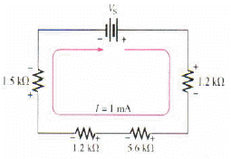
- 9
- 9.5
- 10
- 10.5
(정답률: 알수없음)
19. 그림과 같은 회로에서 R1=20[Ω], R2=10[Ω], R3=30[Ω]일 때 Rab는 몇 [Ω]인가? (문제오류로 인하여 실제 시험에서는 가, 나, 다, 라번이 모두 정답처리 되었습니다. 여기서는 가번을 누르면 정답 처리됩니다.)
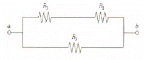
- 20
- 30
- 40
- 50
(정답률: 알수없음)
20. 그림은 전체 핀 개수가 16개인 IC의 윗면모습을 보인 것이다. 그림에서 핀 번호 13번은 어는 것인가?
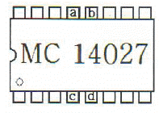
- a
- b
- c
- d
(정답률: 알수없음)
21. 35mm 영사기에서 35의 수치가 의미하는 것은?
- 스크린의 너비
- 영사기 광원의 종류
- 필름의 가로 너비
- 렌즈의 초점 크기
(정답률: 알수없음)
22. 눈의 구조 중 무엇에 대한 설명인가?
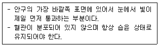
- 각막
- 망막
- 수정체
- 유리체
(정답률: 알수없음)
23. 어떤 임의의 점에서 소리의 세기기 2×10-9[W/m2]이었다면 이 소리의 세기 정도(IL)는 약 몇 [dB]인가? (단, 기준소리의 세기[IC]는 10×10-13[W/m2]이다.)
- 30
- 33
- 60
- 66
(정답률: 알수없음)
24. 광도 3,000Cd인 점광원으로부터 20m 떨어진 위치의 조도 몇 [Lx]인가?
- 7.5
- 15
- 75
- 150
(정답률: 알수없음)
25. 그림과 같은 회로에서 V3는 몇 [V]인가?
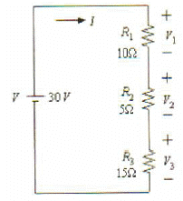
- 5
- 10
- 15
- 20
(정답률: 알수없음)
26. 전력레벨(PWL:Power Level)을 바르게 표현한 것은? (단, P는 단위시간 동안 방사된 음향 에너지, PO는 인간의 가청한계인 10-12W를 기준으로 하다.
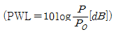
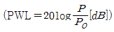
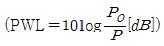
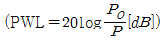
(정답률: 알수없음)
27. 4가의 실리콘(Si) 원자에 비소(As)와 안티몬(Sb)과 같은 5가의 원자를 미량 혼합하여 만든 반도체는?
- 진성반도체
- P형 반도체
- N형 반도체
- 특수반도체
(정답률: 알수없음)
28. 200V, 100W 전구를 20시간 사용했을 때 총 사용 전력량[KWH]은?
- 1
- 2
- 3
- 4
(정답률: 알수없음)
29. 편광안경을 나타낸 그림이다. 입체영화를 보는데 적합한 편광안경은?
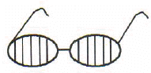
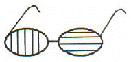
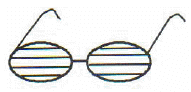
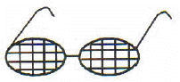
(정답률: 알수없음)
30. 8비트(bit) 컬러와 12비트(bit) 컬러의 차이에 대하여 옳지 않은 것은?
- 8비트 컬러는 약 16,776,216의 컬러 표현이 가능하다.
- 12비트 컬러는 약 8,589,934,592의 컬러 표현이 가능하다.
- 비트가 많아질수록 컬러는 부드러운 계조(gradation)가 가능하다.
- 비트가 많아질수록 밝기는 어두워지며 채도가 감소된다.
(정답률: 알수없음)
3과목: 증폭기 및 녹음재생
31. 유리 표면에 유전체다층막을 입힌 것으로 빛의 간섭을 이용해 빛을 선택적으로 반사, 투과시키는 것을 무엇이라 하는가?
- 프리즘(Prism)
- 다이크로믹 미러(Dichroic Mirror)
- 스펙트럼(Spectrum)
- 반사경(Reflector Mirror)
(정답률: 알수없음)
32. 그림은 3웨이 스피커의 내부 회로도이다. 고음 스피커 ( ? )에 들어갈 내용은?
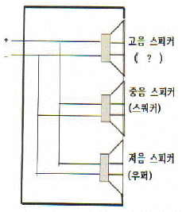
- 크로스 오버
- 트위터
- 혼
- 필터
(정답률: 알수없음)
33. 전자지파 중 하나로 마이크로파보다는 파장이 짧으며 일상적으로 어둠 속에서 열을 내는 물체를 가까이 하면 피부로 온도를 느낄수 있는 이것을 무엇이라 하는가?
- 자외선
- 가시광선
- 적외선
- 레이저 광선
(정답률: 알수없음)
34. 그림과 같이 좌우 스피커가 청취자로부터 동일한 거리에 위치하고 두 스피커에서 동일한 음원이 같은 음량으로 재생되면 청취자는 음원의 위치를 센터 축 선상에 있는 것으로 인지하게 되는 것을 무엇이라 하는가?
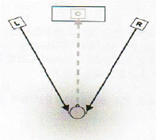
- 직접음(Direct Sound)
- 반사음(Refiection)
- 허음상(Phantom Image)
- 에코(Echo)
(정답률: 알수없음)
35. 오실로스코프를 이용하여 A-Chain 작업시 CaT.No 69P 테스트 필름을 장착하였을 경우 정상적인 파형은?
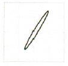
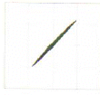
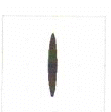
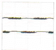
(정답률: 알수없음)
36. 1초에 24프레임(Frame)으로 명시하는 디지털시네마의 영상과 오디오가 1프레임(Frame) 싱크가 어긋났다면 몇 [ms]인가?
- 41
- 51
- 31
- 21
(정답률: 알수없음)
37. 스피커에서 본 앰프의 제동력을 말하고 클수록 음의 선명도가 향상되고 낮으면 음이 부드러워지는 것이다. 일반적인 파워앰프에서는 수백에서 수천 정도의 값으로 나타낸다. 이것은 무엇인가?
- 댐핑팩터(Daping Factor)
- 입력감도
- 정격출력
- S/N (Signal to Noise Ratio)
(정답률: 알수없음)
38. 스크린 영상의 상태를 확인하는데 사용하는 SMPTE RP40 필름을 사용하여 스크린 이미지의 비율을 확인할 수 있는 것으로 옳지 않은 것은?
- 2.35:1
- 1.66:1
- 1.85:1
- 1.33:1
(정답률: 알수없음)
39. 옥타브 당 동일한 에너지를 갖는 노이즈로 인간의 청감 구조와 매칭이 좋아 스피커 계열장비의 측정 용도로 사용되는 것은?
- 화이트 노이즈
- 험 노이즈
- 핑크 노이즈
- 히스 노이즈
(정답률: 알수없음)
40. 리플(ripple)에 대한 설명이다. 옳지 않은 것은?
- Osram xenon Lamp의 Ripple 권고치는 2.5kw 이상의 경우 10% 이내여야 한다.
- Osram xenon Lamp의 Ripple 권고치는 2.5kw 이상의 경우 5% 이내여야 한다.
- 리플 계산식은
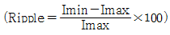
이다. - 화면(Screen)은 밝으면 밝을수록 플리커(Ficker)가 적어진다.
(정답률: 알수없음)
41. 국내 영화사로부터 영화관에 전달 된 DCP(Digital Cinema Package)의 외장 하드(HDD)에 보기와 같이 표기가 되었다. 여기에서 S는 무엇인가?
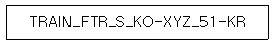
- 1998×1080
- 3996×2160
- 2048×858
- 2048×1080
(정답률: 알수없음)
42. 선형(리니어, Linear) 편광방식을 사용하는 3D 영사 시스템은?
- 아이맥스 3D Digital
- 소니 3D Digital
- 35mm Film 테크닉컬러 3D
- 리얼디 3D
(정답률: 알수없음)
43. 해상도가 720×480 이고 기록방식은 MPEG2를 사용하여 기록레이트는 7∼8Mbps로 구성된 멀티미디어 콘덴츠의 기록 미디어는?
- DVCAM
- Digi-Beta
- DVD
- HDV
(정답률: 알수없음)
44. 인터넷에서 클라이먼트와 서버 간에 파일을 전송하기 위한 규약으로 데이터를 신뢰성 있고 효율적으로 전송하는 기능을 하며 21번 포트(TCP 포트)를 사용하는 것을 무엇이라 하는가?
- HTTP(Hypertext Transfer Protocol)
- FTP(File Transfer Protocol)
- 텔넷(Telecommunication Network Protocol)
- SMTP(Simple Mail Transfer Protocol)
(정답률: 알수없음)
45. 잔향시간에 관한 설명 중에서 옳지 않은 것은?
- 음압레벨이 60[dB] 떨어질 때까지의 시간이다.
- 잔향시간은 체적에 비례한다.
- 잔향시간은 흡음률에 반비례한다.
- 1000[Hz]를 기존주파수로 측정한다.
(정답률: 알수없음)
4과목: 영사기와 필름의 구조원리
46. 디지털시네마 콘덴츠의 유출 방지를 위해 사용하는 키(key)를 무엇이라 하는가?
- MPEG
- KDM
- JPEG2000
- XYZ
(정답률: 알수없음)
47. 광원이 방출하는 빛의 색조를 물리적, 객관적 척도로 나타낸 것이며 일반적으로 ( )가 낮으면 오렌지 개에 가까운 따뜻한 기운이 있는 빛이 되고 ( )가 높아질수록 한낮의 태양광처럼 백색을 띄는 빛이 된다. ( ) 괄호 안에 들어갈 내용으로 옳은 것은?
- 휘도
- 조도
- 광도
- 색온도
(정답률: 알수없음)
48. 3D 디지털 영사기의 Triple Flash에 대한 그림이다. 설명 중 옳지 않은 것은?
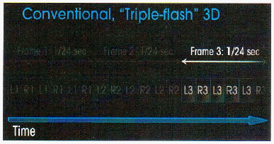
- 원래의 3D DCP(24+24)의 48을 강제로 3번 보여주는 것이다.
- 3번 강제로 보여지기 때문에 144Hz라고도 한다.
- 3D DCP는 Left 241ps, Right 24fps로 구성되어 있다.
- Triple Flash를 구현하기 위해서 DLP는 N:M 비율을 4:2로 설정한다.
(정답률: 알수없음)
49. 매트 화이트(matt white) 스크린의 스크린 개인(Screen Gain)이 1.0일 경우 스크린 중심선의 시야각은 얼마인가?
- 90°
- 120°
- 360°
- 45°
(정답률: 알수없음)
50. 그림은 35mm 필름 중 일부분이다. 화면비는?
- 스탠다드
- 비스타비전
- 시네마스코프
- 플랫
(정답률: 알수없음)
51. 24비트 디지털 오디오의 다이나믹 레인지(Dynamic Range)는?
- 90
- 96
- 120
- 144
(정답률: 알수없음)
52. 오실로스코프(Oscillscope)의 수평편향판에 가하는 전압의 파형은?
- 신호파
- 사인파
- 톱니파
- 펄스파
(정답률: 알수없음)
53. 그림 (A)와 (B)는 서로 다른 스펙트럼을 보여주고 있다. 설명 중 옳은 것은?
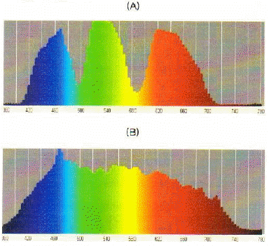
- (A)는 필름 영사기의 스펙트럼이다.
- (B)는 디지털 영사기의 스펙트럼이다.
- (A)와 (B)의 스펙트럼은 영사기의 White 에 의해서 나타난다.
- (A)와 (B)의 스펙트럼은 영사기의 Black 에 의해서 나타난다.
(정답률: 알수없음)
54. 두 개의 소리가 동시에 같은 지점에 도달하면 간섭이 생긴다. 간섭 현상의 특성 중 옳지 않은 것은?
- 두 음이 모두 플러스 음압이면 음압이 더해져서 더 강해진다.
- 한 쪽이 플러스이고 한 쪽이 마이너스이면 서로 상쇄되어 음압이 없어진다.
- 직접음과 반사음의 위상이 180도 차이가 나는 주파수의 음은 상쇄된다.
- 두 음의 음압이 공명하기 때문에 생기는 현상이다.
(정답률: 알수없음)
55. 진동판에서 발생한 음향 진동을 공간에 방사하기 위한 것으로 지향성 개선을 위해서 사용한다. 주파수에 대해 지향성의 변화가 적고 거의 일정하다. 무엇데 대한 설명인가?
- 익스포넨셜혼(Exponential Horn)
- 레이디얼혼(Redial Horn)
- 멀티셀룰러(Multicellular)
- 바이레이디얼혼(Biradial Horn)
(정답률: 알수없음)
56. 스크린 뒤의 메인 스피커의 후면으로부터의 음과 스크린에서 반사된 음의 간섭이 없도록 공간을 완전히 흡음 처리 구조로 설계하는 것을 무엇이라 하는가?
- 배플(Baffle)
- 플러터 에코(Flutter Echo)
- X-커브(X-Curve)
- 잔향
(정답률: 알수없음)
57. 역률이 0.5인 R-L 직렬회로에서 전압과 전류의 위상차는 몇 도 인가?
- 0°
- 45°
- 60°
- 90°
(정답률: 알수없음)
58. DLP는 DMD라는 디바이스로 구성되어 DMD는 그림과 같이 4단 구조를 가진다. 4단 구조에서 ±10도 기울이도록 되어 있으며 동작 속도는 15μs로 초고속인 지지층은 어디인가?
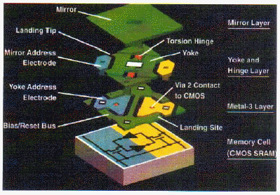
- 거울 층(Mirror Layer)
- 요크 앤 힌지 층(Yoke and Hinge Layer)
- 메탈-3 층(Metal-3 Layer)
- 메모리 셀(Memory Cell)
(정답률: 알수없음)
59. 디지털시네마 영사기의 요구사항으로 옳지 않은 것은?
- 콘트라스트는 최소 2,000:1 이어야 한다.
- 해상도는 2048×1080를 지원하여야 한다.
- 해상도는 4096×2160를 지원하여야 한다.
- 컬러 공간은 8비트(bit) X'Y'Z'를 사용하여야 한다.
(정답률: 알수없음)
60. 파라메트릭 이퀄라이저(parametric equalizer)의 특징 중 옳지 않은 것은?
- 중심주파수를 가변할 수 있다.
- Q(주파수 대역폭)을 조정할 수 있다.
- 진폭을 가변할 수 있다.
- 위상을 조정할 수 있다.
(정답률: 알수없음)